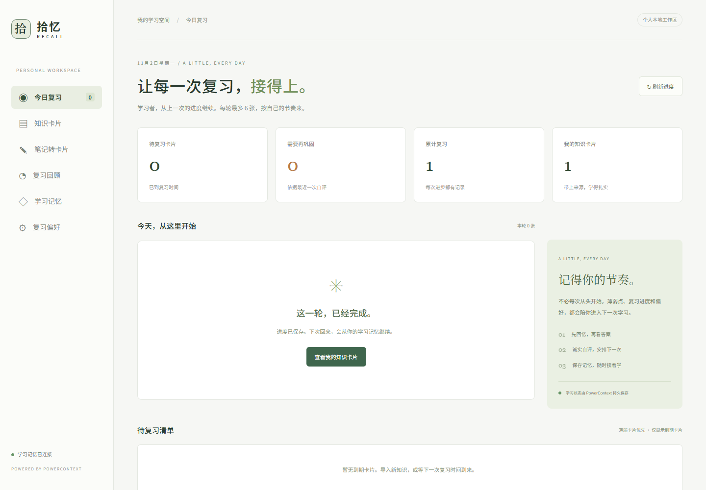
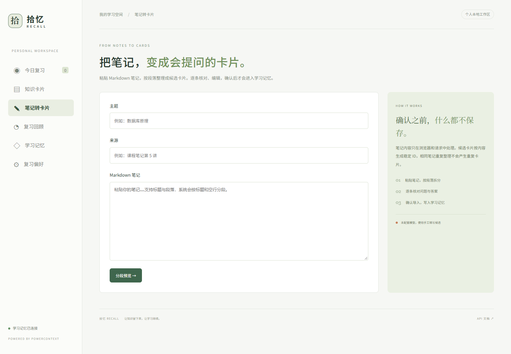
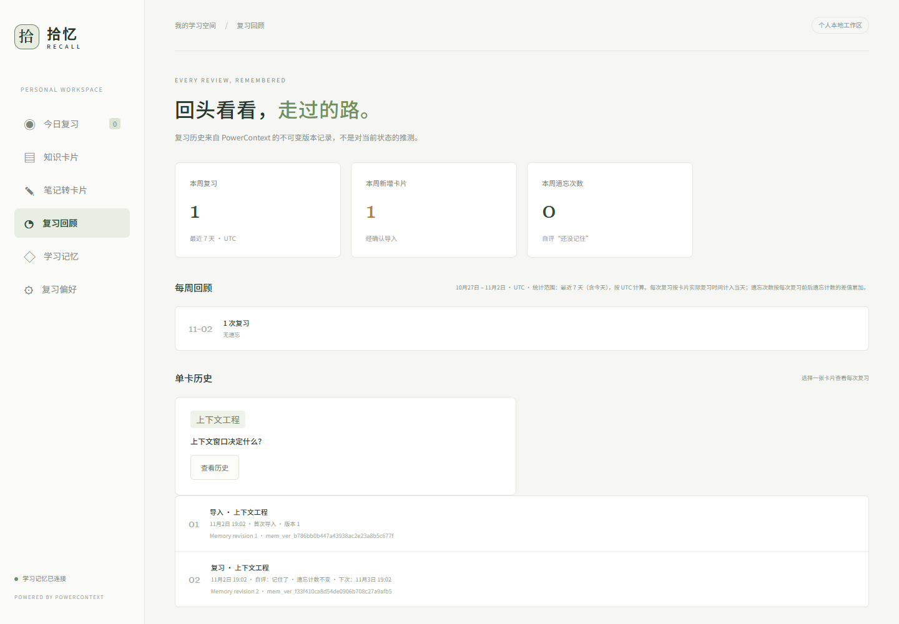

把笔记变成卡片
粘贴一段 Markdown 笔记，按标题自动分段；逐段补全问题与答案、确认后导入。未确认的段落不会进入记忆，重复导入会被稳定 ID 识别并跳过。
A LITTLE, EVERY DAY
笔记记了很多，复习却总是从头开始？拾忆把笔记整理成带来源的知识卡片，按自评安排下一次复习，并保存每张卡片的复习历史。关闭页面再回来，从上一次继续。
了解运行与验证 →看看记忆如何工作
个人本地工作区 · 今日复习页 · 实际运行截图
SMALL STEPS, LASTING KNOWLEDGE
粘贴一段 Markdown 笔记，按标题自动分段；逐段补全问题与答案、确认后导入。未确认的段落不会进入记忆，重复导入会被稳定 ID 识别并跳过。
看完答案，选择未记住、模糊或记住。明确规则决定下次时间，已到期的薄弱卡片优先安排。
偏好和学习状态保存到 PowerContext。关闭页面、重启应用后，仍能读回原来的进度、引用和版本。

笔记转卡片 · 按标题分段，确认后才保存

复习回顾 · 每张卡片的历史与周汇总，读自真实版本
POWERED BY POWERCONTEXT
保存的不是一句“你学过了”，而是可核对的卡片状态：复习次数、最近自评、遗忘次数和下次复习时间。复习历史直接读取历史版本中的真实记录，每条时间线都标注版本引用；周汇总按 UTC 最近 7 天统计实际复习与遗忘次数。计划读取这些状态和偏好，再决定今天展示哪些卡片。
笔记分段 → 逐段确认 → 卡片入 Memory（未确认不入库） 用户自评 → PowerContext Memory 新版本 重新打开 → 同一 Scope 读取卡片与偏好 单卡历史 → 按版本遍历，展示导入、自评与遗忘变化 学习记忆页 → 查看引用、版本与导出证据
采用实际 PowerContext HTTP 服务及其 SQLite 持久化后端。复习安排是可解释的启发式规则，不提供自动判分；可选的语言模型仅在配置了后端环境变量时用于生成候选卡片，不配置时完全手工填写。
TRY IT, VERIFY IT
当前体验方式为本地运行，暂未提供公开在线学习后端（个人学习数据留在本地）。本介绍页是 Qoder Sites 发布的静态资产。
项目提供合成样例和实际服务验证流程：14 项行为测试、13 项真实 HTTP 验证与浏览器操作检查均通过，证据保存在 qoder/evidence/。当前未收集真实用户规模、学习效果或时间节省数据，不用演示数据替代真实使用效果。
开发来源：可运行原型由 Codex 完成（导入、复习与记忆复用）；笔记转卡片与复习历史/周汇总在 Qoder 中开发并通过实际 PowerContext 验证。